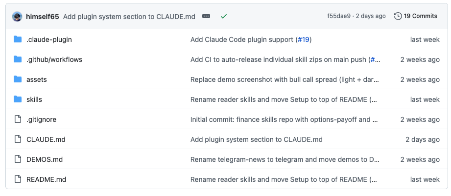
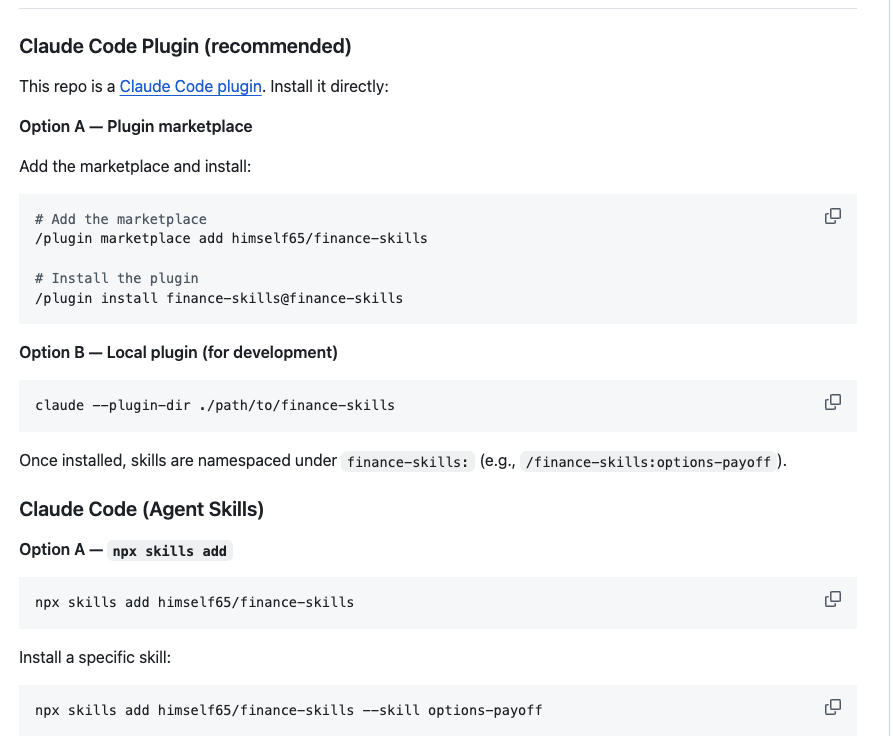
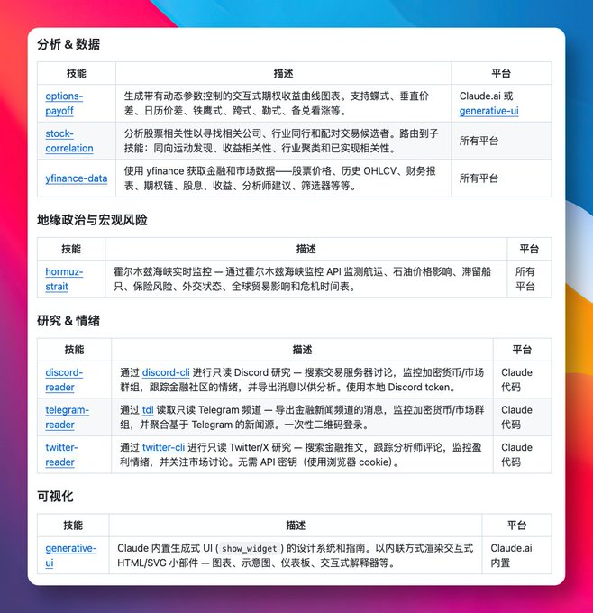

最近又看到一个挺实用的 Agent 技能，名字就很直白：finance-skills。
它不是那种上来先讲一堆愿景、最后你也不知道到底能干嘛的项目。相反，它做的事很具体——就是把金融分析和交易场景里最常用的那几类能力，直接打包成一个可安装技能。
你装上之后，Agent 就能直接干活了。

先说几个最容易感知到的点。一个是股票历史数据获取，这基本算金融分析的起手式。过去很多人自己接 yfinance、自己清洗数据、再丢进 notebook 里画图，流程不算难，但挺碎。现在它把这一步直接收进技能里，等于少折腾一层。
另一个更有意思，是交互式期权收益曲线。这个东西其实很实用，因为很多人聊期权策略，嘴上都明白，一到具体盈亏结构就容易乱。图一出来，风险区间、收益拐点、到期收益，大多数时候比一大段解释更直接。能交互，就更适合拿来快速试策略。
还有不同股票之间的相关性分析。这类功能看着没那么“炫”，但真做组合、做观察名单、做行业联动判断时，会很顺手。尤其是你不想只靠感觉去判断“这俩票是不是差不多”的时候，相关性矩阵这种东西还是很有价值。
目前这个项目已经收录了 8 个技能，除了期权收益曲线、股票相关性分析、yfinance 市场数据获取这些基础能力，还覆盖了实时监控，以及 Discord、Telegram、Twitter 上的金融信息抓取。

这点我觉得其实挺关键。
因为很多金融工具的问题，不是分析不出来，而是信息流和分析流是断开的。你一边盯行情，一边翻社媒，一边再切回图表，整个工作流很碎。现在这种技能化的做法，本质上是在把“数据获取、信息监听、图表生成、分析输出”往一个 Agent 里收。
另外它还提到，支持 Claude 内置的交互式图表生成。这件事的意义不在于“图表更好看”，而在于很多金融分析终于不只是静态结论了。你可以看，可以点，可以拖，可以自己验证，这种体验比单纯看一张截图强不少。

安装方式也比较全，给了三种路子：Claude Code 插件市场一键安装、命令行快速添加，或者手动下载 zip 包安装。这基本覆盖了不同习惯的人群，想省事的就一键装，想自己控流程的也有得选。
Finance-skills 这类项目最有意思的地方在于，它不想重新发明金融分析，而是想把原本分散、零碎、需要手动拼接的步骤，整理成 Agent 能直接调用的一套工具链。
说白了，就是少切几个页面，少写几段胶水代码，少重复做那些你本来就知道该怎么做、但每次还是得再做一遍的事。
GitHub：himself65/finance-skills